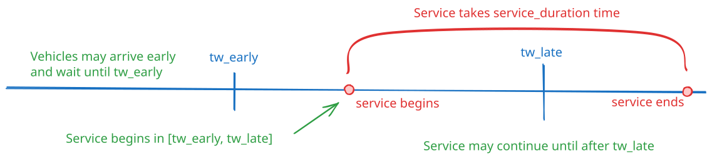
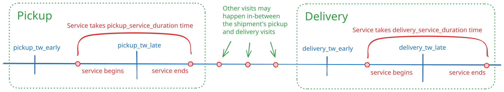
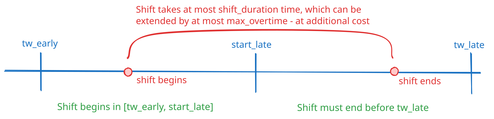

Concepts¶
This page explains how different attributes of PyVRP’s data model relate.
Time and duration constraints¶
Clients, shipments, depots and vehicles are equipped with time windows, and a number of other time and duration-related attributes. Together, these attributes can be used to model a rich set of constraints. Below, we explain the attributes, and how these can be used to enforce different constraints.
Clients¶
In the case of clients modelled using the Client object, the time window indicates when service at the client may begin.
Service is allowed to complete after the time window is already closed.
A vehicle may arrive at a client before its time window opens, in which case it waits until the opening of the time window to begin service.
Arriving late, that is, after the client time window closes, is not allowed in a feasible solution.
Service takes a certain duration to complete, after which the vehicle is free to leave the client.
The following figure explains this graphically.

Shipments¶
Shipments modelled using Shipment objects support time windows and service durations at both the pickup and delivery location.
The model follows that of clients: the time windows indicate when service may begin, but vehicles are allowed to arrive earlier.
The following figure explains the available time window and service duration attributes graphically.

Depots¶
Depots modelled using Depot objects support opening hour restrictions through their time window attributes.
The opening hours indicate when vehicles may visit the depot to start, end, or reload along their routes.
As with client time windows, waiting for a depot to open is allowed, but arriving late is not.
The depot’s service_duration applies to vehicles leaving the depot, and can for example be used to model the time it takes to load the vehicle.
Vehicles¶
Vehicles modelled using the VehicleType object support several duration constraints.
In particular, vehicles are equipped with time window attributes limiting the earliest start and latest completion times of a vehicle’s assigned route.
Between these two times, a vehicle may execute a route of a given maximum duration.
Additionally, the starting time of the vehicle’s assigned route may be further constrained to happen during the beginning of the time window.
The following figure explains this graphically.
